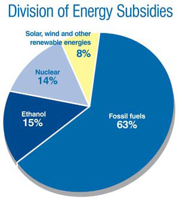

1999 R&D GRANTS AND TAX SUBSIDIES; U.S. ENERGY INFORMATION ADMINISTRATION
Fossil fuels traditionally receive the lion’s share of federal energy subsidies, which are funded by our taxes. A better strategy for the long term would be to shift that support to developing renewable energy industries.